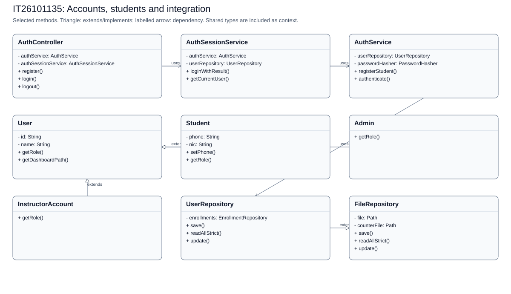
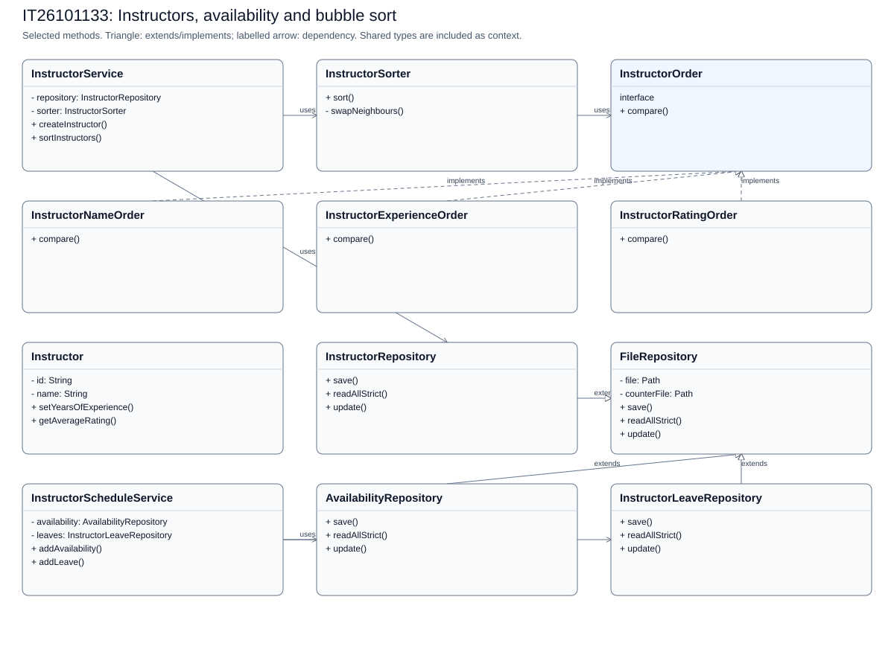
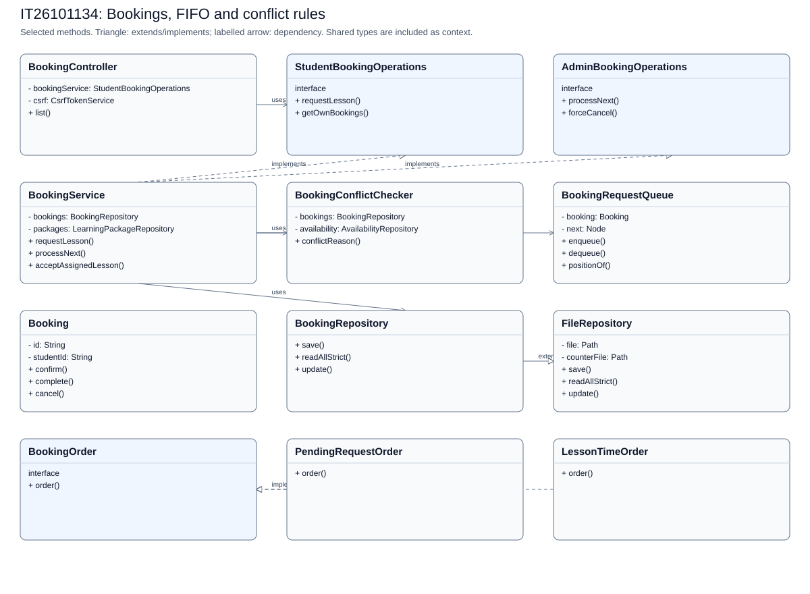
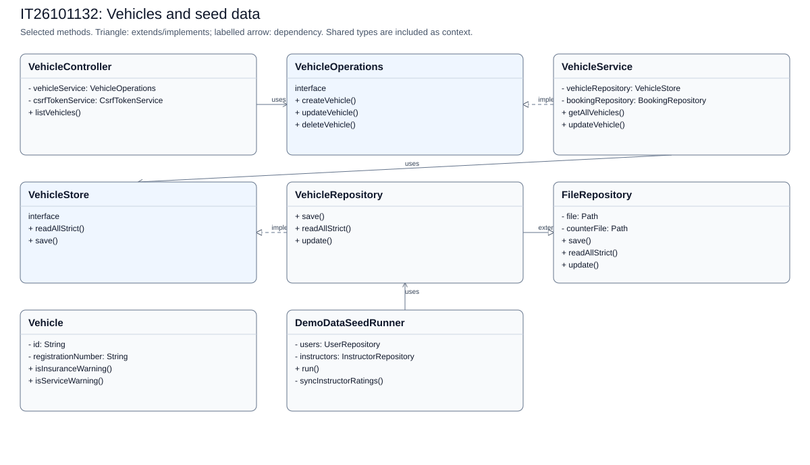
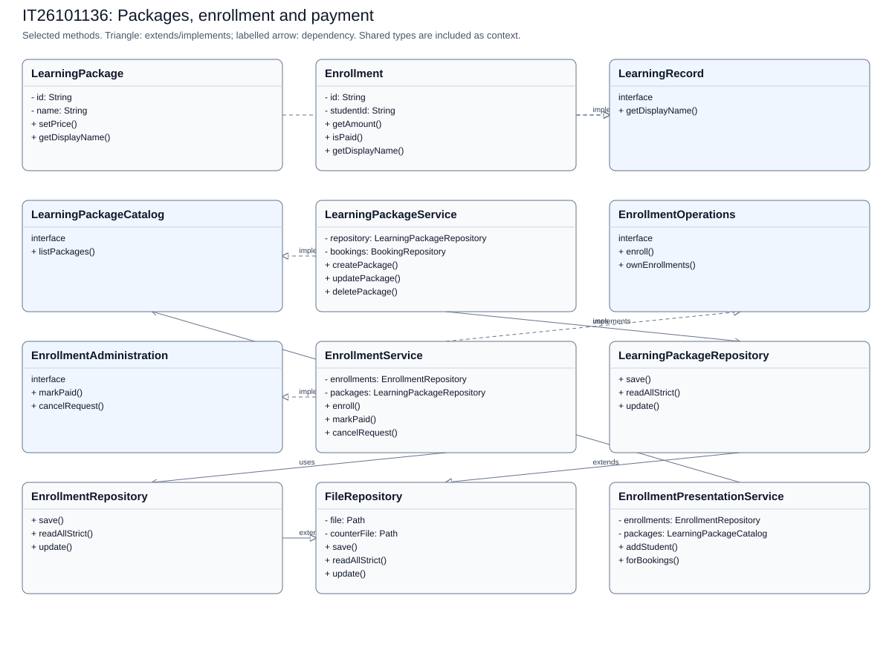
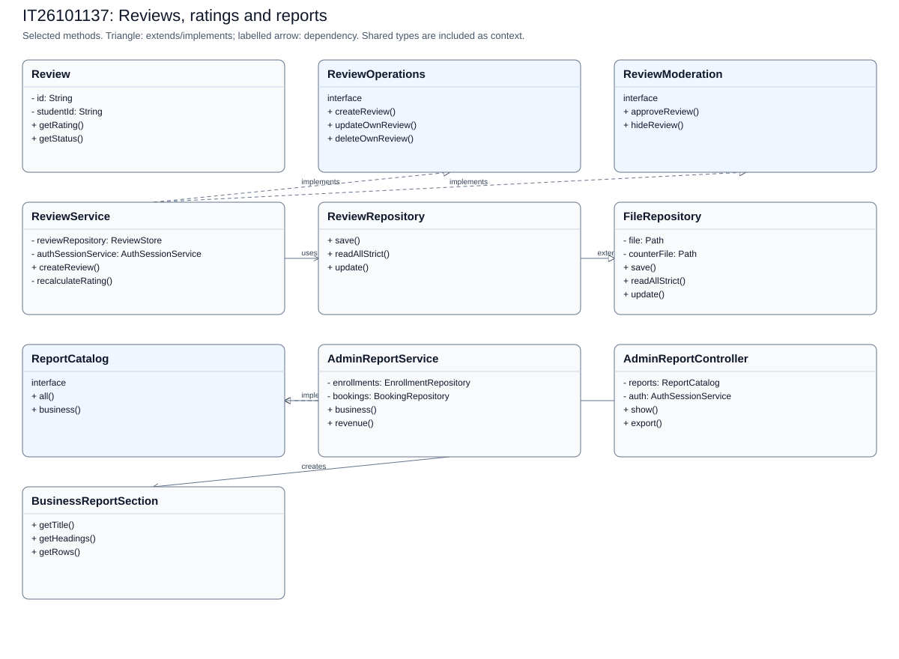

IT26101135: Accounts, students and integration

Selected actual classes and methods. Shared dependencies are included as context. Source: IT26101135.mmd and linked Java files in IT26101135.md.
IT26101133: Instructors, availability and bubble sort

Selected actual classes and methods. Shared dependencies are included as context. Source: IT26101133.mmd and linked Java files in IT26101133.md.
IT26101134: Bookings, FIFO and conflict rules

Selected actual classes and methods. Shared dependencies are included as context. Source: IT26101134.mmd and linked Java files in IT26101134.md.
IT26101132: Vehicles and seed data

Selected actual classes and methods. Shared dependencies are included as context. Source: IT26101132.mmd and linked Java files in IT26101132.md.
IT26101136: Packages, enrollment and payment

Selected actual classes and methods. Shared dependencies are included as context. Source: IT26101136.mmd and linked Java files in IT26101136.md.
IT26101137: Reviews, ratings and reports

Selected actual classes and methods. Shared dependencies are included as context. Source: IT26101137.mmd and linked Java files in IT26101137.md.